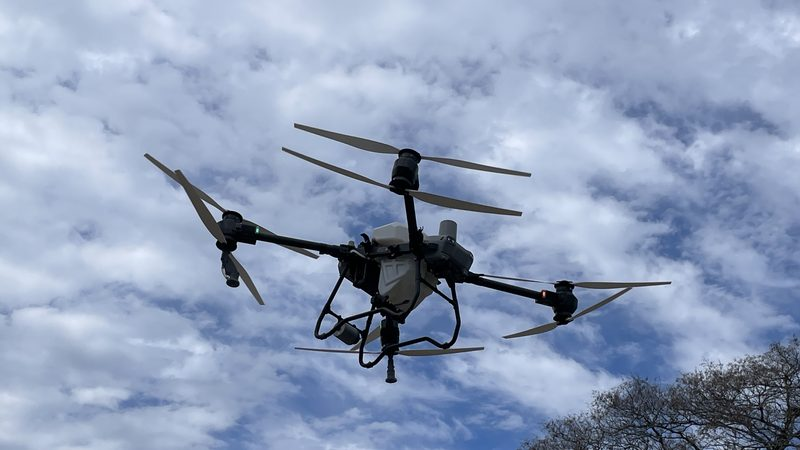

Robot mowers, smart watering, soil sensors and clever garden gadgets, boiled down to a two-minute read. One new post a week.
Newest first

Photo: Blervis, CC0 1.0, via Wikimedia Commons (cropped)
Drones & AI
Drones that hunt down weeds, one plant at a time
TLDR:A CQUniversity prototype that finds weeds with AI and spot-sprays them by drone passed its field trial, and has just won $1.14 million to head to market.
Blanket spraying a whole paddock to knock out a few weeds costs a fortune and is hard on the environment. A team at CQUniversity reckons drones can do it smarter. Their world-first prototype pairs image processing, AI and GPS with lightweight autonomous drones, so herbicide lands on the weeds rather than the whole crop. The tricky bit is "green-on-green": picking out green weeds growing in among a green crop.
After successful field trials on a cotton farm at Alton Downs in Central Queensland in February 2025, the project landed a $1,136,194 federal grant in July from Australia's Economic Accelerator program. Over two years, the team will work towards a patent and commercialisation with industry partners and Charles Darwin University. CQU puts the cost of weeds to Australian farmers at $5 billion a year.
Why it matters for your gardenIt's farm tech for now, but the idea behind it (find the weed first, then treat only that spot) is the smart way to tackle weeds at home too: less chemical, less runoff and healthier soil.
Countertop composters: handy gadget, but is it actually compost?
TLDR:A Canadian test of five electric kitchen composters found most shrink scraps by about three quarters, but turn out dried food powder rather than real compost.
Electric countertop composters promise to turn kitchen scraps into garden gold in a few hours. The Saskatchewan Waste Reduction Council in Canada put that to the test with five models (three Foodcyclers, the Pela Lomi and the Reencle), running them hard in-house before handing them to volunteer households and offices.
The good news: the batch machines cut the weight of food waste by 69 to 76% and its volume by more than half, and volunteers found them clean and easy to use. That's a lot less to cart out to the bin. The catch? Lab tests showed the Foodcycler and Lomi output is dried, pulverised food, not mature compost, and sensitive watercress seeds barely sprouted in it. Only the Reencle made something close to the real thing. Each batch also used roughly 0.5 to 1.6 kWh of power.
Why it matters for your gardenThe report's verdict: a backyard compost bin or council green bin still wins for most people. If you do use one, dig the powder into garden beds or add it to the compost to finish breaking down, rather than using it in pots.
TLDR:In a US survey of 108 landscaping businesses, 52% already used battery gear, mostly blowers and hedge trimmers, but doubts about work capacity still hold the rest back.
Battery mowers, blowers and trimmers keep getting better, but are they up to a full day's work? Researchers at Auburn University surveyed 108 US landscape maintenance businesses about it, publishing the results in Frontiers in Horticulture in July 2025. It's a US study, but the questions are the same for anyone here weighing up the switch.
Just over half (52%) already used some battery equipment. Blowers were the most popular, used by 75% of those businesses, followed by hedge trimmers (61.5%) and string trimmers (55.8%). Cutting noise was the top reason for switching. Among petrol-only operators, worries about work capacity scored 4.9 out of 5, ahead of power and quality. Still, 70% of them said they would consider battery gear if those concerns were sorted. The researchers also note the price gap is much smaller for home-grade tools than for commercial ones.
Why it matters for your gardenFor a typical suburban or hinterland yard, battery tools make a lot of sense: quieter for the neighbours and no fuel to store. On bigger blocks, check the runtime and keep a spare battery charged.
TLDR:In Michigan State University's latest classroom test, the best app named plants correctly 76% of the time, and grasses tripped up nearly everything.
Point your phone at a mystery plant and get a name back. Feels like magic, but how often is it actually right? Michigan State University Extension has been testing plant ID apps with its weed science students since 2018, and the May 2026 write-up added AI chatbots to the line-up.
Students photographed real plants (ornamentals, broadleaf weeds, grasses, seedlings and trees) and fed the same photos into every tool. PictureThis came out on top with 76% of IDs spot on, or 88% helpful if you count near misses. ChatGPT was second at 54%. Google Lens, Gemini, Copilot and Seek landed between 28% and 48%. The weak spot was grasses: even the winner only got grass seedlings right 36% of the time, because the giveaway features are tiny and hard to catch in one photo.
Why it matters for your gardenTreat an app as a first guess, not the final word, especially before you spray a "weed" in the lawn. If it matters, get a second opinion.
Wire or GPS? A robot mower face-off in a Sydney backyard
TLDR:Gadget Guy lived with two Husqvarna robot mowers for two months, and the cheaper boundary-wire model handled his big backyard just fine.
Robot mowers come in two flavours: ones that follow a wire laid around the edge of your lawn, and ones that steer by satellite positioning with no wire at all. Gadget Guy's Angus Jones trialled one of each, writing it up in December 2025: the $3,499 Automower 415X on a wire, and the $5,147 410XE NERA with Husqvarna's EPOS satellite navigation and its own reference station.
Before anything arrived, a dealer checked his block on satellite view and warned the backyard trees would upset the GPS model, so the wire mower got the big back lawn. The dealer's machine laid the wire in about 10 minutes. The verdict? Both kept the grass looking sharp all week, but he still whipper-snips the edges, sticks still need picking up, and blades want changing every couple of months.
Why it matters for your gardenHinterland blocks often mean big trees, slopes and narrow paths. Match the mower type to your yard, get it installed properly, and keep the edges on the to-do list.
TLDR:Researchers built a cheap IoT moisture probe (about US$62) and watered only when the soil asked for it: 28.8% less water and a bigger harvest.
Most of us water on a timer or a hunch. A team at CIHEAM Bari in Italy tried a smarter way and published the results in the journal Sensors in March 2025. They built a low-cost soil moisture probe from off-the-shelf parts around an ESP32 microcontroller, for roughly US$62, and used its live readings to decide when to run the drip line on a lettuce crop.
They compared that against scheduling from weather data. The sensor-led plot used 28.8% less water, ran the pump 16.2% fewer hours and still grew more lettuce (101.8 kg versus 93.8 kg). The homemade probe also held its own against two commercial sensors. It's a farm trial rather than a backyard one, but the idea scales down nicely to a veggie patch.
Why it matters for your gardenWatering when the soil is actually dry, not when the calendar says so, saves water and encourages deeper roots. Handy after a big Sunshine Coast downpour.